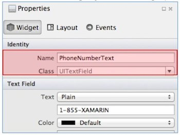
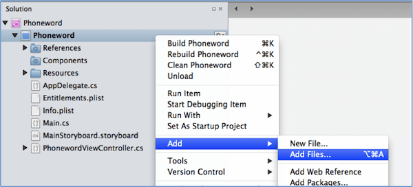
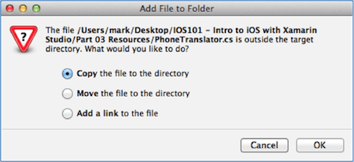

Exercise 1: Creating our first iOS application with Xamarin Studio
Knowledge Needed for the Exercise
Development Machine Setup
You will need to configure your development machine before you begin coding.
See Setup Instructions for Xamarin.
You will need to configure your development machine before you begin coding.
See Setup Instructions for Xamarin.
Executing your code
You can test on a real device (iPod, iPhone, iPad), or on the Apple simulator.
To setup a device, see Device Provisioning.
To learn how to use the simulator, see Interacting with the Simulator.
You can test on a real device (iPod, iPhone, iPad), or on the Apple simulator.
To setup a device, see Device Provisioning.
To learn how to use the simulator, see Interacting with the Simulator.
Exploring On Your Own
Introduction to Xamarin.iOS
The iOS Environment (Apple)
Events, Protocols and Delegates
API Documentation for Xamarin.iOS
Objective 2: Designing the Phoneword Application
Knowledge Needed for the Exercise
Using Storyboards
Screens in iOS can be created and designed with Storyboards.
Xamarin supports Storyboard editing in both Visual Studio (Windows) and Xamarin Studio (Mac).
Learn more about using the Xamarin iOS Designer.
Screens in iOS can be created and designed with Storyboards.
Xamarin supports Storyboard editing in both Visual Studio (Windows) and Xamarin Studio (Mac).
Learn more about using the Xamarin iOS Designer.
Using the Name property to access Controls
- Setting the Name property of a visual control in a Storyboard creates an Outlet (see Additional References below) - this is a special property in the C# code which is mapped to the visual element once it has been created.
- You set this property in the Storyboard designer in the Identity section of the Property Pad, for example: 
- This will create a property in the designer file associated with the View Controller that is tied to the screen (View) being created. You can see this property if you open the source file.
- The property is decorated with an [Outlet] attribute to allow the underlying iOS system to bind the field properly to the control when it is created.
Exploring On Your Own
Human Interface Guidelines for iOS7
Designing a User Interface
Introduction to Storyboards in Xamarin Studio
Objective 3: Adding Behavior to Phoneword
Knowledge Needed for the Exercise
Working with iOS Controls
You will need to work with several basic controls and hook events to get input from the user.
You will need to work with several basic controls and hook events to get input from the user.
- Working with Buttons in Xamarin.iOS.
- Text Input in Xamarin.iOS.
- How to dismiss the On Screen Keyboard.
- Displaying an Alert (scroll down to UIAlertView).
Adding files to Xamarin Studio
- Right-click on the Project node and select Add > Add Files... 
- Navigate to the file; Select it, and Click OK to add it to the project. A new dialog will be displayed with three choices: 
- Select Copy (the default) and Click OK to add the file to your project.
Adding Code Behind Logic in Xamarin.iOS
Each screen (View) you create has a corresponding View Controller, which is where the code behind logic needs to be placed. To add behavior, you will add code into this code behind file.
Each screen (View) you create has a corresponding View Controller, which is where the code behind logic needs to be placed. To add behavior, you will add code into this code behind file.
- Recall from Part 2, that Named elements in the Storyboard are accessible in the code behind file through a property created by the designer.
- A great place to put initializer logic, such as event handlers, is in the
ViewDidLoadmethod - this is called just after the Storyboard is inflated and the UI has been created and tied to your properties. - There should already be a
PhonewordViewController.cssource file in your project, which is the RootViewController - defined by your App Delegate. It should have access to the controls you will need which were created in Part 2, please refer to that exercise if you need a reminder of what has been created: - PhoneNumberText
- TranslateButton
- CallButton
Dialing a Phone Number in iOS
// Ignored in the simulator - will return false.
bool success = UIApplication.SharedApplication.OpenUrl("tel:555-1212");
Base .NET concepts you should know
When you are wiring up event handlers, you can choose any style of delegate. You should already be familiar with delegate types, but here are some references if you need a refresher on the topic.
Delegates Anonymous Methods Lambda ExpressionsObjective 4: Adding a second screen to Phoneword
Knowledge Needed for the Exercise
Creating Multiple Screen
Storyboards allow you to define multiple screens and connect them together with defined navigation behavior. To learn how to use the iOS Designer to work with multiple screens, check out the Walk-Through of adding a second screen to an application.
Storyboards allow you to define multiple screens and connect them together with defined navigation behavior. To learn how to use the iOS Designer to work with multiple screens, check out the Walk-Through of adding a second screen to an application.
Exploring On Your Own
Deep-Dive into Navigation in iOS
Introduction to Storyboards and Segues
Working with Tables and Cells
Navigating Between Screens in iOS
Objective 5: Adding Final Touches
Knowledge for the Exercise
Icons and Splash Screens
Creating a professional application means paying attention to the details, and that includes what your icons and initial splash screen look like. You will always want to add several icon sizes to your app to ensure it looks good in every resolution.
Creating a professional application means paying attention to the details, and that includes what your icons and initial splash screen look like. You will always want to add several icon sizes to your app to ensure it looks good in every resolution.
Exploring On Your Own
Information Property Lists
Supporting High Resolution (Retina) Displays
Reading keys out of info.plist in C#
Tips on Bundle Identifiers in Xamarin.iOS
Preparing for Certification
High Level Concepts (Review)
Core Application Objects (Apple)
Model-View-Controller Pattern
More on MVC
Delegation in iOS (Apple)
Tutorials and Walkthroughs (For More Experience)
Walkthrough: Using the iOS Designer in Xamarin Studio
XCode Storyboard Tutorial (Apple)
Working with XCode and Interface Builder in Xamarin Studio
Working with Auto Layout in Xamarin Studio